7210E10 R.R. CENTRE PILLAR
- Path
- Procedures > 72 PANELS AND FRAME > 7210 REMOVING REFITTING > 7210B structure elements-central and rear part > 7210E10 R.R. CENTRE PILLAR
- Kind
- repair procedure (removal / refitting; the operation number is the code)
- Applies to
- all engines; all production periods
- Interactive page
- https://sloeber94.github.io/elrnDB-a147/en/#/3025960
Applies to: all engines; all production periods; only with equipment: 3 porte
 Removing
Removing
 Refitting
RefittingCheck if any of the connected parts are deformed by checking body alignment dimensions. Use appropriate measurement tools (reference rigs, templates or gauges).
Straighten the body if necessary.
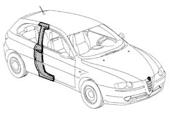
Applies to: all engines; all production periods; only with equipment: 3 porte
1. Remove the PVC treatment from the door sill using a pneumatic knife and appropriate blade.
2. Use a rotary brush to clean the panel edges in order to expose the weld spots.
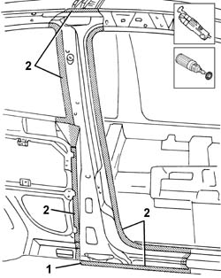
Applies to: all engines; all production periods; only with equipment: 3 porte
1. Use a hacksawing machine to follow the cutting lines shown in the figure.
2. Cross-sections representing cutting point to allow the operator to adjust cutting position and depth in order to avoid damage to the underlying panels.
3. Use a chamfering machine to crop weld points around the edge of the pillar.
4. Drill out spot welds in the areas shown in the figure.
Use a chisel and mallet to remove spots drilled previously.
5. Remove the pillar.
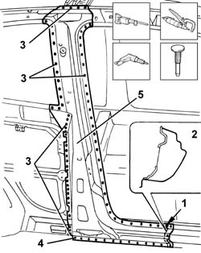
Applies to: all engines; all production periods; only with equipment: 3 porte
Straighten the car edges using a mallet and profiled stake.
Use a grinding wheel to remove the weld spot residues.
Use a rotary brush to clean treated areas.
1. Apply the electric weld paint finish.
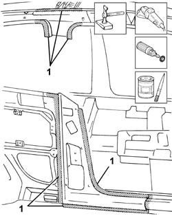
Applies to: all engines; all production periods; only with equipment: 3 porte
1. Working at the bench, drill holes in the part at the points shown.
2. Use a rotary brush to remove the corrosion-proofing from around the inner and outer edge.
Apply electrogalvanised paint on the newly-treated eges.
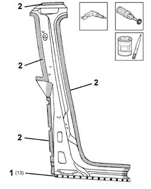
Applies to: all engines; all production periods; only with equipment: 3 porte
Refitting
Removing1. Lay the central pillar on the car correctly and secure using self-locking grippers.
2. Tack the part by carrying out some spot welds.
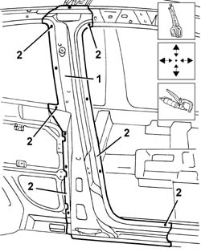
Applies to: all engines; all production periods; only with equipment: 3 porte
1. Position the rear wing.
2. Fit the front door.
Check alignment and gaps around the edges, then remove the door and the rear wing.
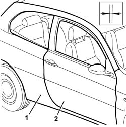
Applies to: all engines; all production periods; only with equipment: 3 porte
1. Use a MIG welder to fill the holes made previously.
2. Use a spot welder to weld the areas shown in the figure.
3. Make a few tacks only in these areas: the part will be welded fully when the rear wing is fitted.
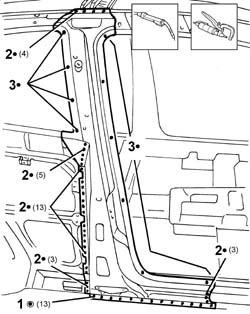
Applies to: all engines; all production periods; only with equipment: 3 porte
Correct any deformations in the panel using a profiled stake and mallet.
Crimp the reference tabs.
1. Use a grinding wheel to level the welds.
Use a rotary brush to clean the newly-welded areas.
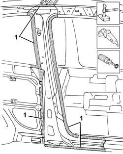
Applies to: all engines; all production periods; only with equipment: 3 porte
1. Apply rust-proofing to newly-welded areas.
Seal the joint lines between the part and the car.
Apply paint.
2. Apply wax oil inside the door sill.
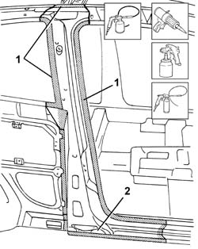
Applies to: all engines; all production periods; only with equipment: 3 porte
Applies to: all engines; all production periods; only with equipment: 5 porte
Removing
RefittingCheck if any of the connected parts are deformed by checking body alignment dimensions. Use appropriate measurement tools (reference rigs, templates or gauges).
Straighten the body if necessary.
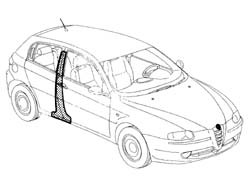
Applies to: all engines; all production periods; only with equipment: 5 porte
1. Remove the PVC treatment from the door sill using a pneumatic knife and appropriate blade.
2. Use a rotary brush to clean the panel edges in order to expose the weld spots.
3. Undo bolts (3a) and remove rear door hinges (3b).
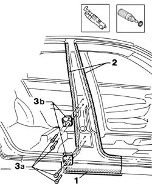
Applies to: all engines; all production periods; only with equipment: 5 porte
1. Use a circular saw to follow the cutting lines shown in the figure.
2. Cross-sections of key areas as a guide to allow the operator to adjust cutting position and depth in order to avoid damage to the underlying panels.
3. Use a chamfering machine to crop weld points around the edge of the pillar.
4. Drill out weld points in the areas shown in the figure.
Use a chisel and mallet to remove spots ground previously.
5. Remove the pillar.
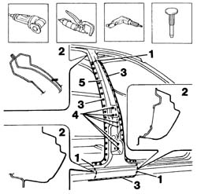
Applies to: all engines; all production periods; only with equipment: 5 porte
1. Use an air saw to cut inner reinforcement (1a) in line with the upper edge (1b) of the inner trim.
2. Use a chamfering machine to remove the weld spots shown in the figure.
Use a chisel and mallet to remove spots drilled previously.
3. Remove the car inner reinforcement.
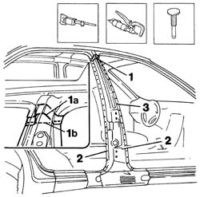
Applies to: all engines; all production periods; only with equipment: 5 porte
1. Use a chamfering machine to remove the spot welds shown in the figure.
2. Drill out the weld spots shown in the figure.
Use a chisel and hammer to remove spots ground previously.
3. Remove the interior trim.
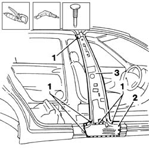
Applies to: all engines; all production periods; only with equipment: 5 porte
1. Use a drill to make equidistant holes as shown in the figure.
Straighten the car edges using a mallet and profiled stake.
Use a grinding wheel to remove the weld spot residues.
Use a rotary brush to clean treated areas.
2. Apply the electric weld paint finish.
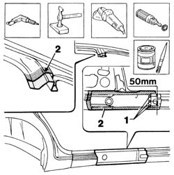
Applies to: all engines; all production periods; only with equipment: 5 porte
1. Cut the central pillar and reinforcement at the bench. Take care to leave a sufficiently wide section of steel to attach the new part to.
2. Use a drill to make holes at the points indicated.
3. Use a rotary brush to remove the corrosion-proofing from around the inner and outer edge.
Apply electrogalvanised paint on the newly-treated eges.
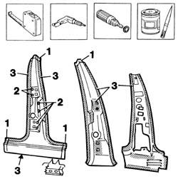
Applies to: all engines; all production periods; only with equipment: 5 porte
Refitting
Removing1. Position the inner trim correctly on the car and secure using self-locking grippers.
Check the dimension shown in the box.
2. Tack the part by carrying out some spot welds.
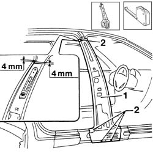
Applies to: all engines; all production periods; only with equipment: 5 porte
1. Fit the pillar reinforcement correctly to the car using self-locking clips.
2. Use the seat belt bolt to locate the part.
3. Use a pneumatic saw to trim the panels and remove excess parts.
4. Refit the rear door hinge halves using the bolts.
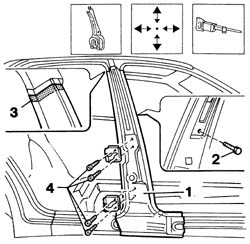
Applies to: all engines; all production periods; only with equipment: 5 porte
1. Fit the rear door.
2. Fit the front door.
Check alignment and gaps around the edges, then remove the door and hinges.
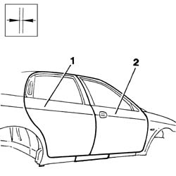
Applies to: all engines; all production periods; only with equipment: 5 porte
1. Tack the pillar reinforcement by carrying out some spot welds.
2. Use a MIG welder to seam weld the edge shown in the figure.
Use a grinding wheel to level the welds made previously
Apply rust-proofing to newly treated areas.
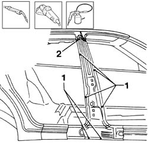
Applies to: all engines; all production periods; only with equipment: 5 porte
1. Lay the pillar on the car correctly and secure using self-locking grippers.
2. Fit the rear door hinge halves.
3. Fit the rear door.
4. Fit the front door.
Check alignment and gaps around the edges, then remove the door and hinges.
Remove the door hinge halves.
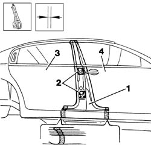
Applies to: all engines; all production periods; only with equipment: 5 porte
1. Use a circular saw to cut the door sill ready for fitting by laying it in place.
Use a circular saw to cut the upper part ready for fitting by laying it in place.
2. Trim off any excess from the panel.
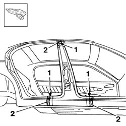
Applies to: all engines; all production periods; only with equipment: 5 porte
1. Use a MIG welder to seam weld the upper edge and door sill.
2. Use a MIG welder to fill the holes made previously.
3. Use a spot welder to weld the areas shown in the figure.
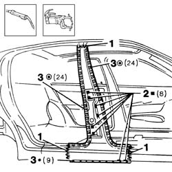
Applies to: all engines; all production periods; only with equipment: 5 porte
Correct any deformations in the panel using a profiled stake and mallet.
Crimp the reference tabs.
1. Use a grinding wheel to level the weld and remove.
Use a rotary brush to clean the newly-welded areas.
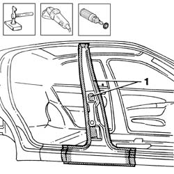
Applies to: all engines; all production periods; only with equipment: 5 porte
1. Apply rust-proofing to newly-welded areas.
Seal the joint lines between the part and the car.
Apply paint.
2. Apply wax oil inside the door sill.
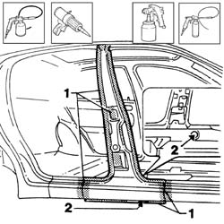
Topics linked from this page (1)
Topics that link to this page (57)
- 1004B10 power unit with manual gearbox - r + r
- 1004B24 power unit with manual gearbox with hydraulic selection - r r
- 1016D20 left cylinder head - r + r and replace gasket
- 1016D24 right cylinder head - r + r and replace gasket
- 1020D36 flywheel end oil seal - replace for manual gearbox with hydraulic selection versions
- 1020D38 flywheel side oil seal - replace
- 1020D51 crank shaft rear mount - apply silicone to mating surfaces
- 1024B10 engine flywheel - r + r for versions with manual gearbox
- 1024B11 engine flywheel - r r for manual gearbox with hydraulic selection versions
- 1048A23 cold air intake - r r
- 1048A28 vacuum air circuit resonator pipe - r+r
- 1048b48 heat exchanger duct - r r
- 1048b50 turbo charger intercooler - r + r
- 1080B39 right catalytic preconverter r r or replace cylinder head gasket
- 1084B34 cartridge engine oil filter support - r + r
- 1084C34 engine oil cooling radiator - r + r
- 1084C36 Engine oil cooling RADIATOR mounting BRACKET - R.R.
- 1084C40 Air DUCT for engine oil cooling radiator - R.R .
- 1088B20 engine cooling radiator - r + r
- 1088E11 fans with single engine duct - r+r
- 1810A20 clutch - r + r
- 1810A28 clutch - r r for manual gearbox with hydraulic selection versions
- 1820A24 thrust bearing linkage - r + r
- 2110A10 manual gearbox and differential - r + r
- 2110A11 manual gearbox with differential - r r for versions with hydraulic selection
- 2110C22 gear input shaft seals - r r
- 2127C10 support for hydraulic circuit reservoir and system pump - r r
- 2127C18 pipe from hydraulic circuit fluid reservoir to hydraulic speed selection drive pump - r r
- 2127C20 pipe frompump to hydraulic speed selection actuator unit - r r
- 2127C30 hydraulic speed selection system pump - r r
- 2710A35 intermediate drive shaft mount - r r
- 3340B56 RIGID PIPE from hydraulic CONTROL UNIT to RIGHT FRONT BRAKE - R.R.
- 4130B49 return pipe from power steering case to heat exchanger pipe r r
- 4130B52 heat exchanger pipe - r+r
- 4130B54 return pipe from heat exchanger pipe to power steering fluid resevior r r
- 4130B98 Power assisted steering fluid cooling RADIATOR - R.R.
- 4130B99 Power assisted steering fluid RADIATOR mounting BRACKET - R.R.
- 5040A40 air conditioner condenser - r+r
- 5040A44 air conditioner dehydrating filter/accumulator - r+r
- 5040A50 pipe from compressor to air conditioner condenser - r+r
- 5040A52 pipe from condenser to dehydrating filter - r+r
- 5040A60 pipe from condenser to evaporator (expansion pipe) - r+r
- 5040A64 pipe from evaporator to dehydrating filter/accumulator - r+r
- 5040A73 compressor inlet pipe - r r
- 5040A76 tandem pipe for delivery and return from evaporator rr
- 5040B14 air conditioner system multi-level pressure switch - r+r
- 5050D08 headlamp washer jet/s - r r
- 5050D13 headlamp washer system types and fittings - r r
- 5505C28 intergrated engine bay and abs system wiring - r r
- 5530A10 alternator - r+r
- 5540B74 Left front LIGHT CLUSTER with fog light - R.R.
- 5540B75 Right front LIGHT CLUSTER with fog light - R.R .
- 5540C24 motor (one) for l/h or r/h headlamp/light cluster alignment correction - r+r
- 5540D14 l/h or r/h fog lamp bulb (one) - r+r
- 7055A39 LEFT SIDE FRONT GRILLE - R.R.
- 7055A40 radiator shield - r r
- 7055B32 protective moulding on front bumper (1), lh or rh - r r